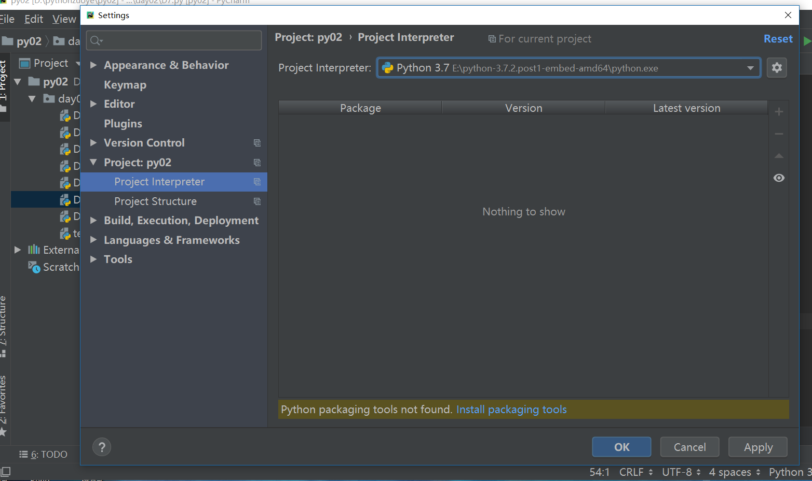
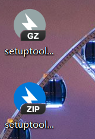
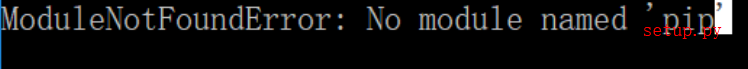
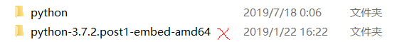

错误起因:
第一次安python3.72的时候,直接去官网下了压缩包,解压后也没有exe文件.环境也是手动配置,在之后安装Pycharm的时候,系统找不到解释器,手动加上.
错误经过:
等写程序用到import以后发现自己缺少包,原本在pycharm里自动安装的pip和setuptools都没有,就像图中这样.
随后自己去官网下了pip,但在安装时报错,缺少setuptools


截图没了,找个网上的,就是类似这种情况.
尝试搜索,用python setup.py install //安装
仍然以失败告终.
解决办法:
重新安装python3.74
等我发现官网下载选项时,才发现自己下错了版本.原来是从一开始就错了才会导致这么多麻烦.

画叉的是出错的版本,原因其实在我自己没看清楚.这个embed版本是嵌入式版本
web-based installer 是需要通过联网完成安装的
executable installer 是可执行文件(*.exe)方式安装
embeddable zip file 嵌入式版本，可以集成到其它应用中
这个embed版本一般比较精简,很多东西需要手动去做.建议初学者下载exe版本
经过了这次波折,总结一下
在官网下载的时候一定要仔细看清楚版本!
备注:本人能力有限,如果有大佬有不用重装的办法解决,希望能留下评论.